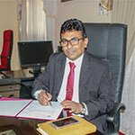

Faculty of Technology
University of Ruhuna
Faculty of Technology
University of Ruhuna
Professor E.P.S. Chandana

Department of Biosystems Technology
Professor in Zoology
Deputy Vice Chancellor
dvcepsc@admin.ruh.ac.lk / epschandana@btec.ruh.ac.lk
041 22 27029, 04122 22682/1 Ext. 2001


ACADEMIC AND PROFESSIONAL QUALIFICATIONS
PhD (Kyoto University, Japan), 2010
M.Phil (Ruhuna, SL), 2004
B.Sc (special in Zoology) (Ruhuna,SL), 1998
Chief student counselor:University of Ruhuna since 2009. up to now
Visiting lecturer: Allied Health Sciences Degree Program Faculty of Medicine, University of Ruhuna From 2009 up to now.
PUBLICATIONS
De Silva PMCS, Mohammed Abdul KS, Ekanayake EMDV, Jayasinghe SS, Jayasumana C, Asanthi H.B., E.P.S.Chandana et al. (2016) Urinary biomarkers KIM-1 and NGAL for detection of Chronic Kidney Disease if Uncertain Etiology (CKDu) among Agricultural Communities in Sri Lanka. PloS Negl Trop Dis 10 (9): e0004979
Khaja Shameem Mohammed Abdul, Sudheera Sammanthi Jayasinghe, Ediriweera P.S. Chandana, Channa Jayasumana, P. Mangala C.S. De Silva (2015) Arsenic and human health effects: A review Environmental Toxicology and Pharmacology. 40 (3) 828-846
T.D.K.S.C. Gunasekara and E.P.S. Chandana (2014) Cytokine Mediated Immunomodulatory Properties of Selected Sri Lankan Medicinal Plants. European International Journal of Science and Technology.3 (2)29-38
E.P.S.Chandana, K.K.A.Kithmini and T.D.S.K.Gunasekara (2014) Immunostimulative effects of combination of extracts of C.rotundus Linn., A.calcarata Rosc., S.surattense Burm., C.infortunatum Linn., C.laccifer Linn on cyclophosphamide induced rats. J.Exp. Integr.Med. 2 (5)
Chandana E.P.S., Dayasiri P.B.I.A.K. and Amarasinghe N.J.de.S. (2014) A note on Fish diversity in the major Lagoons of Bundala National Park- A Ramsar wetland in Sri Lanka- An insight to Wetland degradation. Research Journal of Animal, Veterinary and Fishery Sciences.2 (5)10-13
Ediriweera P.S. Chandana, Shashindra K.K. Hansini andSameera T.D.K.C. Gunasekara(2014) Immunomodulatory activity of MunroniapumilaWight. (Meliaceae) leaf extraction in rats.Current Research in Biological and Pharmaceutical Sciences. 3 (1) 1-4
Dayasiri P.B.I.A.K., Chandana E.P.S. and Amarasinghe N.J. De. S. A note on snail diversity in selected areas of “KiralaKele” eco-touring zone in southern Sri Lanka. International Journal of Science, Environment and Technology. 3 (1) 1-9
T.D.K.S.C. Gunasekara1 and E.P.S. Chandana(2014) Cytokine Mediated Immunomodulatory Properties of Selected Sri Lankan Medicinal Plants. European International Journal of Science and Technology 3 (2) 29-37
Chandana E.P.S., Dayasiri P.B.I.A.K. and AmarasigheN.J.de.S. (2014)A note on Fish diversity in the major Lagoons of Bundala National Park- A Ramsar wetland in Sri Lanka- An insight to Wetland degradation.Res. J. Animal, Veterinary and Fishery Sci.International Science Congress Association. 2 (5) 10-13
W. G. K. H. Samarasekara, E. P. S. Chandana and N.J.de S.Amarasinghe (2013) A note on bird-habitat relationship in KiralaKele, Sri Lanka.TAPROBANICA.5 (1) 97-98
E.P.S.Chandana, A.C.D.Rajapaksha and W.G.K.H.Samarasekara (2012) A survey of odonate assemblages associated with selected wetland localities in southern Sri Lanka. Asian Journal of Biodiversity Conservation.1 (2) 67-73
P.B.I.A.K., Dayasiri and E.P.S. Chandana (2012) A preliminary study on the toxic effects of an emerging detergent (Prinso) on rat skin. Vingnanam Journal of Science. 10 (1) 19- 24
Samarasekara, W.G.K.H. &Chandana, E.P.S. (2011) Public knowledge on riparian ecosystems associated with Nilwala River – A case study. Rohana Research Journal, University of Ruhuna.8: 141-153
Ediriweera P. S. Chandana, Yasuhiro Maeda, Akihiko Ueda, Hiroshi Kiyonari,NaokoOshima, Mako Yamamoto, Makoto Noda et al.(2010) Involvement of the Reck tumor suppressor protein in maternal and embryonic vascular remodeling in mice. BMC. Developmental Biology.10:84
Huan Wang, Yukio Imamura, RyotaIshibashi, Ediriweera P. S. Chandana, Mako Yamamoto and Makoto Noda (2010) The Reck tumor suppressor protein alleviates tissue damage and promotes functional recovery after transient cerebral ischemia in mice. J.Neurochem. 115 (2):385-98
Satoshi Kawashima, Yukio Imamura, Ediriweera P.S. Chandana, Toru Noda, Rei Takahashi, Chiaki Takahashi & Makoto Noda (2007) Localization of the membrane-anchored MMP-regulator RECK at the neuromuscular junctions. J.Neurochem.104 (2):376-85
Muraguchi T, Takegami Y, Ohtsuka T, Kitajima S, EdiriweeraP.S.Chandana, Omura A, Miki T, Takahashi R, Matsumoto N, Ludwig A, Noda M, Takahashi C. (2007) RECK modulates Notch signaling during cortical neurogenesis by regulating ADAM10 activity.Nat Neurosci.10 (7):838-45
E.P.S.Chandana, N. J. de S. Amarasinghe and Samayawardhena L.A. (2008) Factors affecting the avi-faunal distribution in the three lagoons (Malala, Embillakala and BundalaLewaya) of Bundala National Park (A Ramsar Wetland) in Sri Lanka. Ruhuna Journal of Science. 3: 35-45
K. B. SuneethaGunawickrama and E. P. S. Chandana (2006) Some hydrographic aspects of Koggala Lagoon with preliminary results on distribution of the marine bivalve Saccostreaforskalli: pre-tsunami status. Ruhuna Journal of Science. 1: 16-23
Chandana E.P.S.,AmarasingheN.J.De.S. and Samayawardhena L.A. (2005) Limnological variation of three lagoons: A case study from a Ramsar wetland in Sri Lanka. Proceedings of the Third Science Symposium. Faculty of Science, University of Ruhuna, Matara, Sri Lanka.pp 69-84
Chandana E.P.S.,AmarasingheN.J.De.S. and Samayawardhena L.A. (2004) The role of pondweed (Potamogetonspp) beds as an important micro-ecosystem in Embillakala lagoon of BundalaNational Park: a Ramsar wetland in Sri Lanka. Proceedings of the Second Science Symposium. Faculty of Science, University of Ruhuna, Matara, Sri Lanka. pp14-22
Chandana E.P.S.,Ravindra R., Lasanthi A.H.P. and Samayawardhena L.A. (2002) Are lagoon characteristics lost due to freshwater intake? A preliminary micro-ecosystem study in Malala lagoon, Bundala National Park Sri Lanka. Proceedings of the First Science Symposium. Faculty of Science, University of Ruhuna, Matara, Sri Lanka. pp26-34
EdiriweeraP.S.Chandana, Yoko Yoshida & Makoto Noda (2007) Study on the role of RECK in angiogenesis and vascular remodeling. Proceedings of the COE international conference. Kyoto University Graduate School of Medicine. 21st Century COE Program. Kyoto, Japan. p71
Deepananda K.H.M.A, Chandana E.P.S., Samayawardhena L.A. and Lasanthi A.H.P. (2003) Do salinity sensitive copepods Pseudodiaptomusannendelei (Psedodiaptomidae) (Sewell, 1919) and Acartiella minor (Acartidae) (Sewell, 1919) share same niche: A case study from Malala lagoon Bundala National Park (A Ramsar wetland in Sri Lanka). Proceedings of the International Conference on Conservation of Wetlands. Colombo, Sri Lanka
ChandanaE.P.S., and SamyawardhenaL.A. (2003) Feeding guild analysis and fish abundance studies in the aquatic environments of Bundala National Park- ARamsar site Sri Lanka. Proceedings of the International Conference on Conservation of Wetlands. Colombo, Sri Lanka.
K.B.Suneetha, N.J.de S.Amarasinghe, E.P.S.Chandana and K.M.S.J.J.Bandara (2003) Study of characteristics of Koggala lagoon in southern Sri Lanka in relation to the construction of a breakwater, and associated impact on fishing community. Proceedings of the International Conference on Conservation of Wetlands. Colombo, Sri Lanka.
ChandanaE.P.S.,SamayawardhenaL.A.,AmarasingheN.J.de.S, and Lasanthi A.H.P. (2002). Analysis of Socio-ecological factors affecting Bundala National Park (A Ramsar wetland in Sri Lanka). Proceedings of the Nanjing International Wetland Symposium, China. p8
Chandana E.P.S., Samayawardhena L.A., AmarasingheN.J.de.S, Lasanthi A.H.P,.Peieris L.C.D (2002). Are lagoon characteristics affected due to fresh water intake? A micro ecosystem study in Malala lagoon, Bundala National Park –A Ramsar Wetland in Sri Lanka.-. Proceedings of the Nanjing International Wetland Symposium, China. p9
Chandana E.P.S., Samayawardhena L.A., AmarasingheN.J.de.S, Lasanthi A.H. and Peieris L.C.D (2002) Impact on physico-chemical and biological environment of Malala lagoon (A Ramsar Site in Sri Lanka) following a man-made abrupt hydrologic alteration. Proceedings of the Nanjing International Wetland Symposium, China. p10
Chandana E.P.S., LasanthiA.H.P., Priyadarshani K.G., SiriwardanaV.P.I.,WeerasingheI.M.J., SenaratnaR.J.P.S., AthukoraleR, Ravindra W, Amarasinghe N.J. De S., Peiris L.D.C. and Samayawardhena L.A.(2002). Dynamics of two dominant Calanoid copepods (PHYLLODIAPTOMUS ANNAE AND ACARTIA SP) in Malala lagoon, Bundala National Park (A Ramsar wetland in Sri Lanka). Proceedings of the 8th International Conference On Copepoda (ICOC). National Taiwan Ocean University (NTOU), Keelung, Taiwan.
ChandanaE.P.S., LasanthiA.H.P., PriyadarshaniK.G., SiriwardanaV.P.I., WeerasingheI.M.J., SenaratnaR.J.P.S., AthukoraleR, Ravindra W, Amarasinghe N.J. De S., PeirisL.D.C. SamayawardhenaL.A. and Deepananda K.H.M (2002) Morphometric differentiation of three unknown Calanoid copepods, including oneAcartiaspecies, found in BundalaNational Park (A Ramsar wetland in Sri Lanka). Proceedings of the 8th International Conference On Copepoda (ICOC) National Taiwan Ocean University (NTOU), Keelung, Taiwan.
Ekanayake, E.M.D.V., Thakshila, W.A.K.G., Nishshanka, K.M., Senevirathne, K.A.A.S., Perera, H.A.S.D., Gunasekara, T.D.K.S.C., Asanthi, H.B., Jayasumana, C., Chandana, E.S.P., Mohammed Abdul, K.S., De Silva., P.M.C.S. (2015) Occupational exposure levels of Glyphosate among vegetable farmers in Nuwara Eliya, Sri Lanka: An Enzyme Linked Immunosorbent Assay. Proceedings of the International forestry and environment symposium, Department of forestry and environment science, University of Sri Jayewardenepura, Sri Lanka.
Mohammed Abdul, K.S., Ekanayake, E.M.D.V., Gunasekara, T.D.K.S.C., Perera, H.A.S.D., De Silva, B.C.J., Jayasumana, C., Chandana, E.P.S., Jayasinghe, S.S., De Silva, P.M.C.S. (2015) Occupational Paraquat exposure among sugarcane and vegetable farmers in Sri Lanka: a case study. Proceedings of the 35th annual sessions of the Institute of Biology
Dayasiri P.B.I.A.K. and Chandana E.P.S. (2011) Effects of “Prinso” (emerging toxic detergent) on rat skin. Proceedings of the 8th Academic Sessions. University of Ruhuna. pp197
Dayasiri P.B.I.A.K., Chandana E.P.S., AmarasingheN.J.deS., and Samayawardhena L.A. (2010) Analysis of zooplankton diversity and abundance in Bundala lagoon in Bundala National Park with reference to aquatic habitat characteristics. Proceedings of the 7th Science Symposium, Faculty of Science, University of Ruhuna. pp37
Samarasekara, W.G.K.H. &Chandana, E.P.S. (2010) Analysis of bird species diversity associated with a Sonneratia dominated marshland located along the Nilwala River in Sri Lanka. Proceedings of the First National Conference on identification of knowledge gaps for sustainable management of mangrove ecosystems in Sri Lanka, Matara, Sri Lanka. p21
Samarasekara, W.G.K.H. &Chandana E.P.S. (2010) Effect of habitat alteration on avifaunal diversity of the riparian mangrove ecosystems associated with Nilwala River. Proceedings of the Research Symposium 2010, UvaWellassa University of Sri Lanka, Badulla. p170
Samarasekara, W.G.K.H. &Chandana, E.P.S. (2009) Abundance and diversity of avifauna in different riparian habitats associated with Nilwala River. Proceedings of Sixth Science Symposium, Faculty of Science, University of Ruhuna, Matara, Sri Lanka. p21
E.P.S.Chandana, Yoko Yoshida and Makoto Noda (2009) Manipulation of RECK (Reversion-inducing Cystein-rich proteins with Kazal motifs) in Human Vascular Smooth Muscle Cells and Human Vascular Endothelial Cells. Proceedings of the 6th Science Symposium, Faculty of Science, University of Ruhuna. p9
P.B.I.A.K. Dayasiri and E.P.S.Chandana (2009) Zooplankton abundance and diversity ion the brackish water–freshwater mixing zone in the western periphery of Embillakala lagoon in Bundala National park-a Ramsar wetland in Sri Lanka. Proceedings of the 6thScience Symposium, Faculty of Science, University of Ruhuna. p22
Chandana E.P.S.,Ravindra R., Lasanthi A.H.P., AmarasingheN.J.De S., Peiris L.D.C., Samayawardhena L.A.(2001) Physico-chemical and biological environment of Malala lagoon at Bundala National park (Ramsar site -Sri Lanka) under overwhelming fresh water influence. Proceedings of the 57th Annual Session of Sri Lanka Association for the Advancement of Science. p202
W. A. J. P. De Silva, K H M A Deepananda, Chandana, E P S., P M C Priyanganie,L. D. C. PeirisandL. A. Samayawardhena (2001) An investigation of the effects of low concentrations of Chloropyrifos on epididymal sperm maturation in rats; Proceedings of the 57th Annual Session of Sri Lanka Association for the Advancement of Science.p208
K.H.M.A. Deepanada, W.A.J.P. De Silva,E P S Chandana, P.M.C. Priyangani, S.B.T. Priyanka, S.S.S. Weerasinghe, H.W. Dharmasiri, L.D.C. Peiris and L.A. Samayawardhena (2001) Damages of Paraquat exposure to male reproductive system are persistent and severely affect spermatogenesis to the fertilization process in rats and mice. Proceeding of the 57th Annual Session of Sri Lanka Association for the Advancement of Science. p207
H.C.E.Wegiriya and E.P.S.Chandana (2001) Bioassay of Syleptaderogata larvae using the isolated Protozoan pathogen of Spodopteralitura. Proceedings of the 57th Annual Sessions of Sri Lanka Association of the Advancement of Science. p210
M.G.V.Wickramasinghe and E.P.S.Chandana (2001) Malpractices in pest management strategies adopted by farmers in Weilgama area. Proceedings of the 57th Annual Sessions of Sri Lanka Association of the Advancement of Science. p165
Samayawardhena,L.A., Deepananda, K.H.M.A., Athukorale, R., De Silva, W.A.J.P., Chandana E.P.S. (2001) Paraquat altered spermatogenesis and sperm maturation processes are expressed for 35 day post treatment in Hamster. Proceeding of the 21stAnnual Session of Institute of Biology Sri Lanka, Institute of BiologySri Lanka. pp.32
Chandana E.P.S., LasanthiA.H..P., AmarasingheN.J.DeS., Peiris L.D.C., I.M.J. Weerasinghe, R.J.P.S.Senaratna, Samayawardhena L.A. (2001) Detailed morphology with reference to abundance of Acartiaspecies in Malala lagoon at Bundala National Park (Ramsar site- Sri Lanka). Proceeding of the 21st Annual Session of Institute of Biology Sri Lanka. Institute of Biology. Sri Lanka. Pp
A.H.P.Lasanthi, E.P.S.Chandana, W. Rawindra, N.J.de S Amarasinghe, L.D.C.Pieris and L.A.Samayawardhena (2001) Abundance and distribution of Calanoid copepods (Acartia species and Phyllodiaptomusannae) in Malala lagoon, Bundala National Park-Sri Lanka, are partly water quality dependant: Effects of sand bar opening on copepod dynamics. Proceedings of the 21st Annual Sessions of the Institute of biology, Sri Lanka. p39
Samayawardhena L.A, Deepananda K.H.M.A., De Silva W.A.J.P, and ChandanaE.P.S. (2000) Some niche segregation characteristics of freshwater fish species inhabiting rice field associated permanent water bodies; Proceedings of 56th the Annual Session. Part 1 Abstracts. Sri Lanka Association for the Advancement of Science. p160
ChandanaE.P.S.,Samayawardana L.A., Pieris L.D.C., DharmasiriH.W..(2000) Are early developmental stages of frogs in danger due to environmental pollutants? An investigation with low concentrations of Chlorpyrifos; Proceedings of the 56th Annual Session Part 1 Abstracts. Sri Lanka Association for the Advancement of Science. p161
Chandana E.P.S.,Deepananda K.H.M.A., De Silva W.A.J.P., Samayawardhena L.A. Peiris L.D.C. Priyanka S.B.T. Weerasighe S.S.S and Pitadeniya G.S.(2000) Chronic exposure to Paraquat alters spermatogenesis and Nuclear D.N.A. integrity of epididymal sperm in mice; Proceeding of the 20th Annual Session of Institute of Biology Sri Lanka. Institute of Biology, Sri Lanka. pp 27
Chandana E.P.S.,Samayawardana L.A., Pieris L.D.C Dharmasiri., H.W.(2000) Significance of mammalian epididymal morphology in sperm maturation; Proceeding of the 56th Annual Session of Sri Lanka Association for the Advancement of Science. p162
Deepananda K.H.M.A, De Silva W.A.J.P., Samayawardhena L.A, Chandana E.P.S., Peiris L.D.C, Priyanka S.B.T., PitadeniyaG.S.andWeerasinghe S.S.S.(2000) Effects of acute exposure of Paraquat on sperm structure and function in rats; Abstracts of papers of Proceeding of the 20th Annual Session of Institute of Biology, Sri Lanka. Institute of Biology. Sri Lanka. pp26.
Samayawardhena,L.A.,Deepananda, K.H.M.A., Priyanka., S.B.T., De Silva, W.A.J.P., Chandana. E.P.S. (2000) Diet composition affects oestrous cycle of female rats; Proceeding of the 20th Annual Session of Institute of Biology Sri Lanka. Institute of Biology, Sri Lanka. pp 29
AWARDS & FELLOWSHIPS
Commonwealth Fellowship 2014/2015
Research Assistant COE program, Faculty of Medicine, Kyoto University April, 2007-March, 2008
Teaching assistant COE program, Faculty of Medicine, KyotoUniversity August, 2005-March, 2006
Fellowship of the Japanese Government Monbukagakusho Scholarship (April, 2003-March 2008)
Fellowship of the UNESCO/UNO to attend the mangrove training workshop held in India during 3rd to16th November 2009
MEMBERSHIPS & ACTIVITIES IN PROFESSIONAL BODIES
Faculty Representative to the Senate of University of Ruhuna January 2012 up to date.
Chief organizer:The Oratory Competition of University of Ruhuna Students organized by Indian High Commission and University of Ruhuna 2013.
Ruhuna University Coordinator for KAWITHATALENT program organized by Ministry of Higher Education, Sri Lanka from 2012/2013/2014
A member of Organizing Committee of the 5th Science Symposium 2009.
Member of Job Fair Organizing Committee/Faculty of Science 2008/2009.
Member of the SambuddhathwaJayanthi Committee/University ofRuhuna 2010.
Secretary to the 8th Science Symposium and introduced innovations and inventions exhibition where undergraduates presented their innovations and inventions 2011.
Member of the Student`s request sub-committee/Faculty of Science 2009/2010/ 2011.
Serving Technical Evaluation Committees 2012/2013.
Member of the Senate of University of Ruhunaas the Faculty Nominee 2011/2012.
RESEARCH INTERESTS
Molecular Biology and Biotechnology
Biochemistry for under graduates, graduate students in subject areas of Environmental science
Research Methodology Conducting research onMolecular Biology
Plant Based Medicines Environmental Science